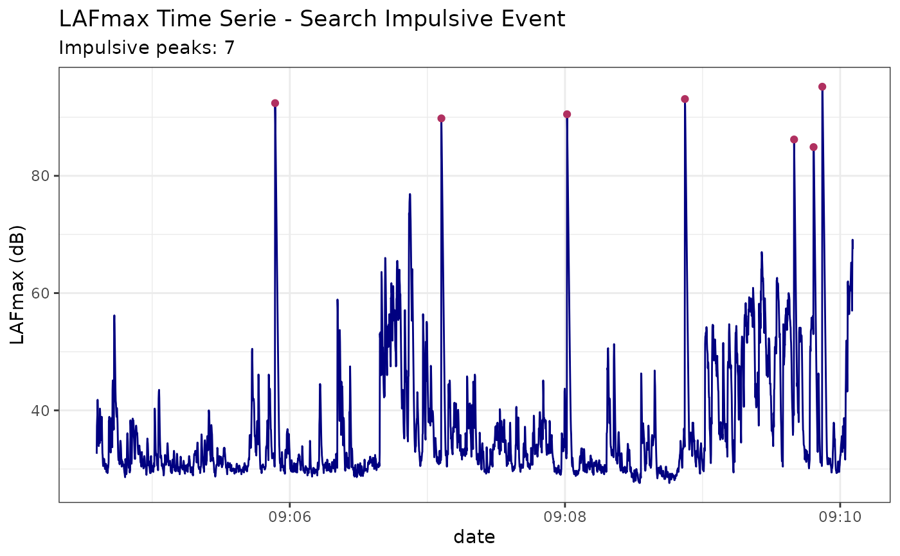
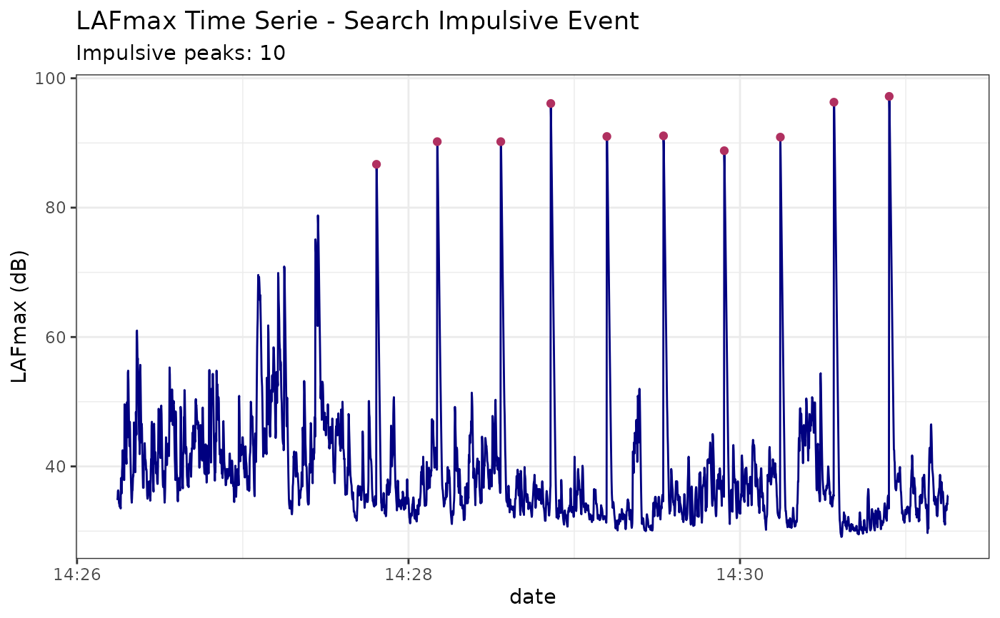

Returns a list with dataframe of peaks impulsive and a plot
Examples
#data("dataset_impulsive1")
#data("dataset_impulsive2")
searchImpulse(df = dataset_impulsive1)
#> $Plot

#>
#> $dfPeaks
#> ymax xmax startPeak stopPeak date cri1 cri2
#> 1 95.2 3166 3164 3189 2022-04-28 09:09:52 y 5
#> 2 93.1 2567 2566 2586 2022-04-28 09:08:52 y 5
#> 3 92.4 780 778 801 2022-04-28 09:05:53 y 4
#> 4 90.5 2053 2050 2076 2022-04-28 09:08:00 y 4
#> 5 89.8 1505 1503 1524 2022-04-28 09:07:06 y 4
#> 6 86.2 3043 3042 3056 2022-04-28 09:09:39 y 4
#> 7 84.9 3128 3127 3146 2022-04-28 09:09:48 y 5
#>
searchImpulse(df = dataset_impulsive2)
#> $Plot

#>
#> $dfPeaks
#> ymax xmax startPeak stopPeak date cri1 cri2
#> 1 97.2 2795 2794 2818 2022-05-06 14:30:54 y 5
#> 2 96.3 2595 2594 2622 2022-05-06 14:30:34 y 5
#> 3 96.1 1570 1564 1591 2022-05-06 14:28:51 y 4
#> 4 91.1 1978 1977 2000 2022-05-06 14:29:32 y 5
#> 5 91.0 1773 1771 1794 2022-05-06 14:29:11 y 5
#> 6 90.9 2401 2397 2420 2022-05-06 14:30:14 y 4
#> 7 90.2 1159 1158 1183 2022-05-06 14:28:10 y 5
#> 8 90.2 1389 1387 1410 2022-05-06 14:28:33 y 5
#> 9 88.8 2198 2197 2218 2022-05-06 14:29:54 y 4
#> 10 86.7 939 936 959 2022-05-06 14:27:48 y 5
#>